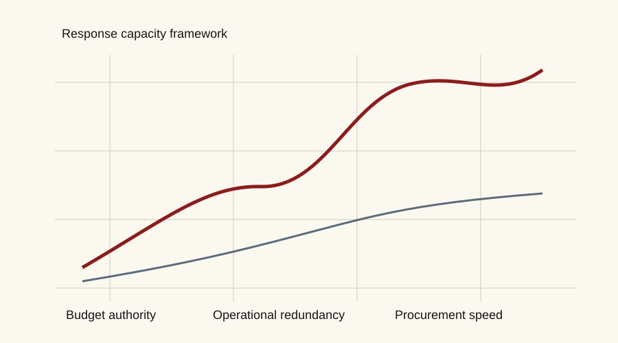

Executive summary
Institutions are planning against baselines that no longer behave as stable reference points. A credible response requires more than risk registers: it requires repeated exposure assessment, transparent assumptions, and decision pathways that survive incomplete data.
This dossier presents a publication pattern: lead findings, evidence panels, compact tables, and a reader-visible review trail.
This is sample copy for a static website. Replace the text with your own research before publication.
Exposure
Infrastructure exposure should be described through service continuity, financial sensitivity, and political accountability. The reader should know what is directly observed, what is modelled, and where expert judgement enters the analysis.
| Exposure class | Indicator | Confidence |
|---|---|---|
| Power continuity | Queue delays, outage records, load growth | Medium |
| Public finance | Disclosure language and insurance pressure | Moderate–high |
| Critical services | Hospital, port, transit, and water-system dependencies | Moderate |
Response capacity
Response capacity is not a slogan. It should be assessed through budget authority, procurement speed, operational redundancy, legal constraints, and public trust.

Decision pathways
The final section of a dossier should not simply summarize findings. It should connect findings to choices: what to monitor, what to fund, what to defer, and what claims remain too uncertain to act on confidently.
- Monitor indicators with high volatility and low decision cost.
- Fund interventions with strong evidence and high service-continuity value.
- Defer decisions where uncertainty is material and reversibility is high.
- Disclose assumptions that materially influence public interpretation.